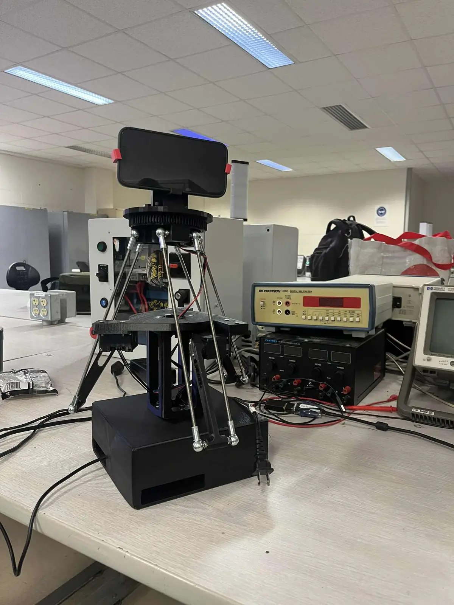

An intelligent cameraman robot with real-time face tracking and live video streaming capabilities. The system autonomously follows and tracks subjects during filming, enabling hands-free cinematic recording. Built with computer vision algorithms for robust face detection and tracking, combined with robotic servo control for smooth camera movement.

Vlogus pairs vision and robotics to create a hands-free filming assistant. The focus was achieving reliable tracking while keeping motion smooth and responsive for real-time recording.
To achieve this, I helped build a website to capture video feed from the user's phone and transmit it to the robot's rpi5 using a WebSocket connection. Then I implemented real-time face detection and tracking using OpenCV, and built a robotic control system to smoothly follow the subject. The system also delivers live video streaming for instant preview, making it ideal for vloggers and content creators.